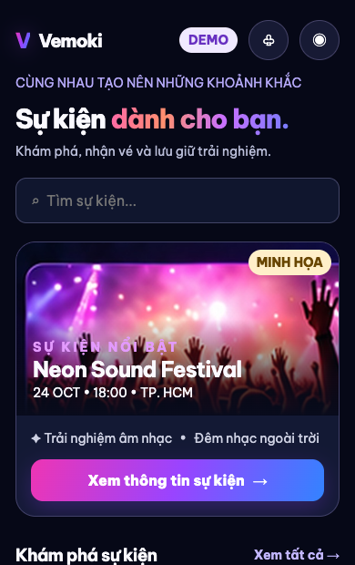
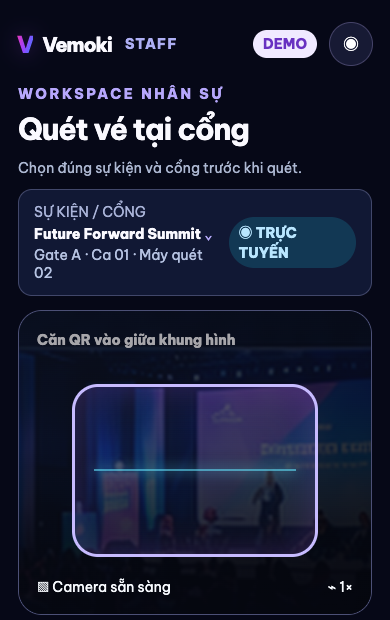
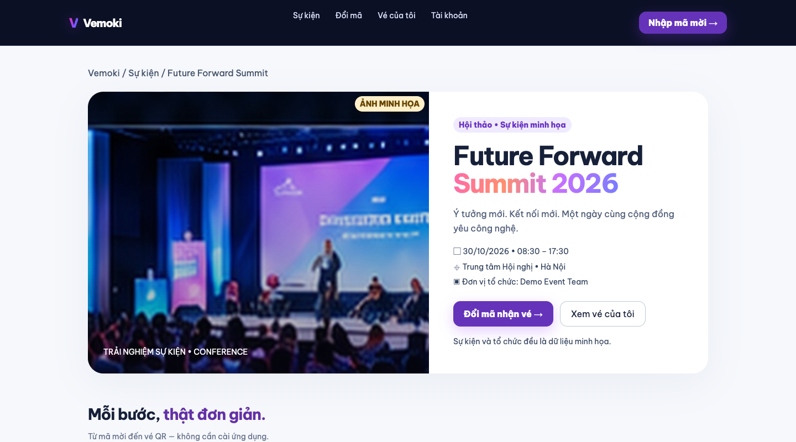
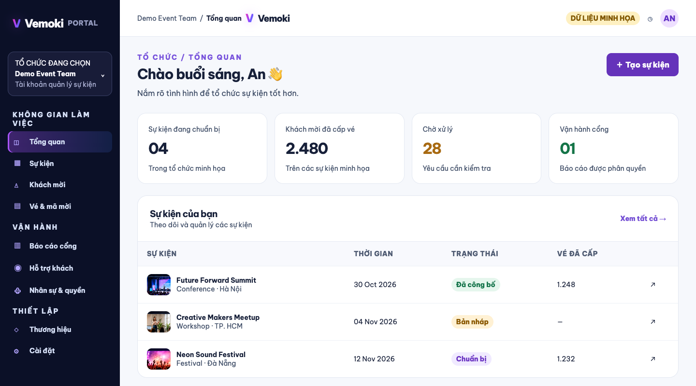

Vemoki, mọi trải nghiệm.
Giữ cảm hứng neon sáng tạo của website — đồng thời tối ưu trải nghiệm cho người tham dự, nhân sự cổng và đội ngũ tổ chức.
Thiết kế minh họa, không phải giao diện đang chạy hoặc bằng chứng tính năng.

Attendee iOS ↗
Khám phá sự kiện, nhập mã mời, ví vé, QR và tài khoản. Trải nghiệm giàu cảm xúc nhưng luồng nhận vé rõ ràng.
Xem giao diện →
Staff Gate iOS ↗
Quét vé tại cổng, nhập tay, lịch sử, offline queue và outcome an toàn. Không có phiên bản Gate trên web.
Xem giao diện →
Attendee Web ↗
Sự kiện, đổi mã mời, ví vé và xem QR với layout responsive; không có camera quét Gate hoặc quản trị nhân sự.
Xem giao diện →
Organizer Portal ↗
Quản trị sự kiện/khách mời/vé, theo dõi tiến độ, CS và báo cáo Gate read-only theo quyền.
Xem giao diện →Một hệ thống nhất quán, đúng ngữ cảnh.
Màu nhấn neon dành cho thương hiệu; trạng thái Gate tuân thủ ngữ nghĩa nghiệp vụ. Portal ưu tiên đọc dữ liệu, thao tác chính xác và phân quyền.